SHURIKEN CARGADO
El Shuriken Cargado es una herramienta arrojadiza que permite atacar a los enemigos desde cierta distancia. Resulta especialmente útil contra adversarios ágiles y criaturas que pueden ser interrumpidas mediante proyectiles [23].

En Sekiro: Shadows Die Twice, el combate no depende únicamente de la fuerza o de la habilidad con la espada. El protagonista debe dominar diferentes técnicas que le permitan adaptarse a los enemigos y superar los desafíos que encuentra durante su viaje por Ashina [21].
A medida que avanza la aventura, Sekiro puede aprender nuevas artes de combate, perfeccionar sus movimientos y desarrollar habilidades especiales. Estas técnicas amplían sus posibilidades ofensivas y defensivas, permitiéndole responder de distintas maneras ante cada enfrentamiento [21].
Entre ellas se encuentran las artes shinobi, las técnicas de Ashina, las enseñanzas del templo Senpo y las habilidades vinculadas a las herramientas de prótesis. Cada conjunto posee características particulares y ofrece diferentes alternativas para afrontar los peligros del juego [21].
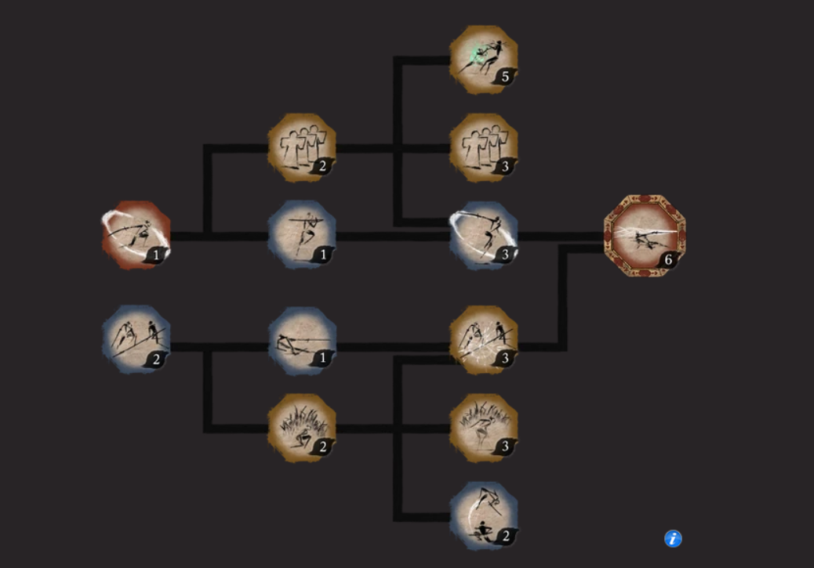
Las Artes Shinobi reúnen las técnicas fundamentales que Sekiro utiliza para desarrollar su estilo de combate. Estas habilidades están orientadas a mejorar su capacidad de supervivencia, movilidad y eficacia durante los enfrentamientos [21].
Entre sus técnicas destacan los movimientos que permiten responder a los ataques enemigos, aprovechar las oportunidades durante el combate y mejorar la ejecución de determinadas acciones. Su aprendizaje resulta especialmente útil durante las primeras etapas de la aventura [21].
Dominar estas habilidades permite construir una base sólida para afrontar enemigos cada vez más peligrosos [21].
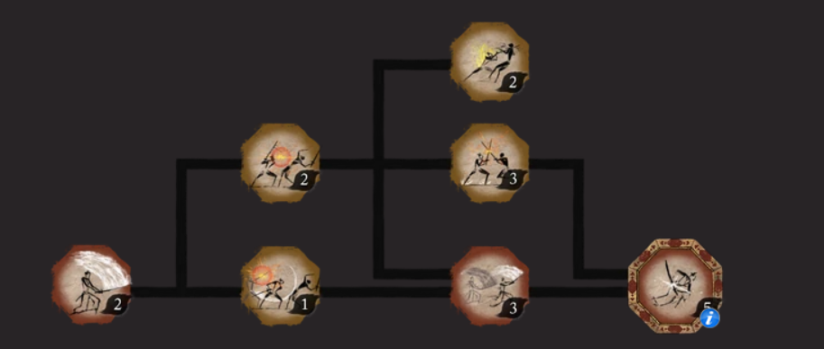
Las Artes de Ashina representan el estilo de combate desarrollado por los guerreros de esta región. Sus técnicas están estrechamente relacionadas con el uso de la espada y con la capacidad de mantener una postura firme frente al adversario [21].
Este conjunto de habilidades permite ejecutar ataques contundentes y aprovechar los momentos en los que el enemigo queda vulnerable. Algunas técnicas también mejoran la capacidad de Sekiro para enfrentarse directamente a sus oponentes [21].
Su aprendizaje refleja la importancia que tiene la disciplina del combate dentro de la tradición militar de Ashina [21].
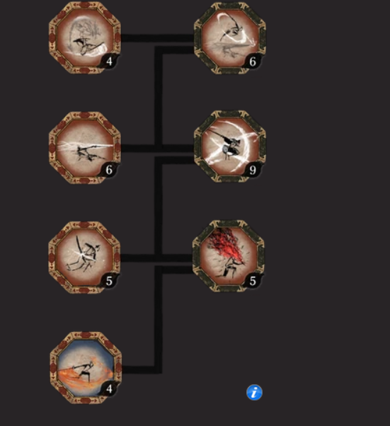
Las Artes de Mushin comprenden técnicas avanzadas que reúnen conocimientos de diferentes escuelas de combate. Representan una de las formas más exigentes de perfeccionamiento para un guerrero [21].
Estas habilidades permiten acceder a técnicas especiales que combinan movimientos ofensivos y una gran precisión en el manejo de la espada. Para conseguirlas, Sekiro debe cumplir determinados requisitos y desarrollar previamente otras habilidades [21].
Su dominio demuestra el nivel de experiencia alcanzado por el protagonista durante su recorrido [21].
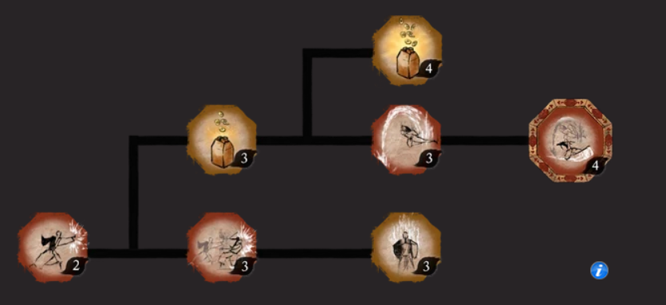
Las Artes del Templo proceden de las enseñanzas de los monjes del templo Senpo. A diferencia de otras escuelas, estas técnicas incorporan movimientos de combate desarmado y habilidades físicas particulares [21].
Sus movimientos permiten ejecutar ataques utilizando principalmente las piernas y el cuerpo, ofreciendo alternativas para romper la postura de los adversarios. Algunas de estas técnicas resultan especialmente útiles cuando Sekiro necesita enfrentarse a enemigos que requieren una estrategia diferente [21].
Este estilo demuestra que el combate en Ashina no se limita al uso de la espada [21].
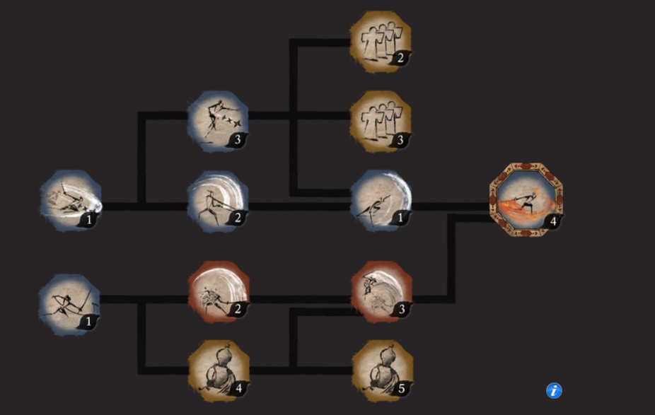
Las Artes de prótesis están relacionadas con el uso de las herramientas instaladas en el brazo prostético de Sekiro. Cada herramienta posee características propias y puede utilizarse para responder a diferentes situaciones durante la aventura [21].
Estas habilidades permiten mejorar su utilización, ejecutar ataques especiales y aprovechar con mayor eficacia las posibilidades que ofrece cada dispositivo. Su combinación con el combate tradicional amplía las opciones tácticas del protagonista [21].
Gracias a estas técnicas, las herramientas de prótesis dejan de ser simples recursos auxiliares y se convierten en una parte importante del estilo de combate [21].
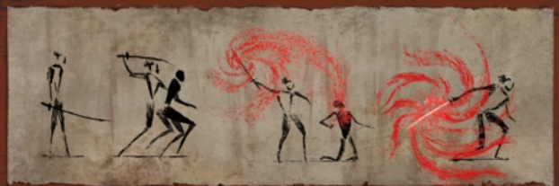
Los Ninjutsu son técnicas especiales que Sekiro puede utilizar después de realizar determinados golpes mortales. Estas habilidades aprovechan el sigilo y permiten obtener ventajas adicionales después de eliminar a un adversario [21].
Dependiendo de la técnica equipada, el protagonista puede utilizar el cuerpo de un enemigo como recurso, ocultar su presencia o ejecutar movimientos que facilitan la eliminación de otros adversarios [21].
Su utilización requiere una planificación adecuada, ya que cada Ninjutsu ofrece posibilidades diferentes para afrontar situaciones de peligro [21].
El brazo prostético de Sekiro es uno de los elementos más importantes de su equipamiento. Gracias a las modificaciones realizadas por el Escultor, el protagonista puede incorporar diferentes herramientas que amplían sus posibilidades durante la exploración y el combate [22].
Cada dispositivo cumple una función específica: algunos permiten atacar a distancia, otros sirven para interrumpir los movimientos de los enemigos y también existen herramientas destinadas a la defensa o a la movilidad [22].
Su utilización adecuada puede marcar la diferencia durante un enfrentamiento. Por ello, conocer sus características y comprender en qué situaciones conviene emplearlas constituye una parte fundamental de la experiencia de juego [22].
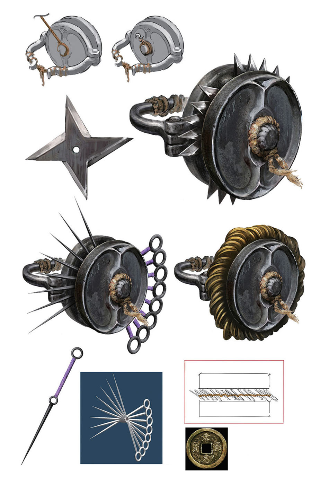
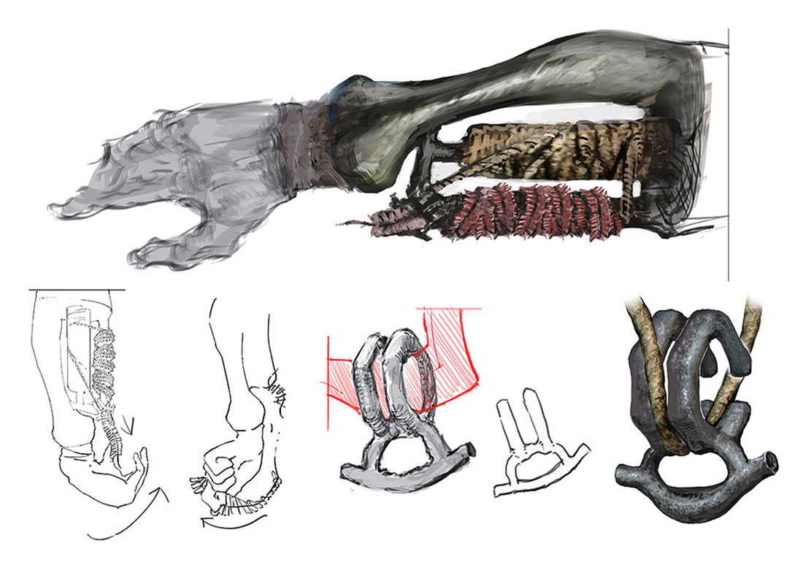
El Shuriken Cargado es una herramienta arrojadiza que permite atacar a los enemigos desde cierta distancia. Resulta especialmente útil contra adversarios ágiles y criaturas que pueden ser interrumpidas mediante proyectiles [23].
Los Barrenos producen un fuerte estruendo que puede asustar y distraer a los enemigos. Son especialmente efectivos contra determinados animales, permitiendo interrumpir sus acciones y crear oportunidades para atacar [24].
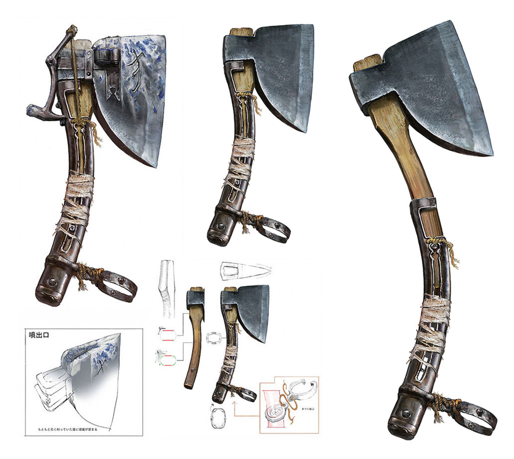
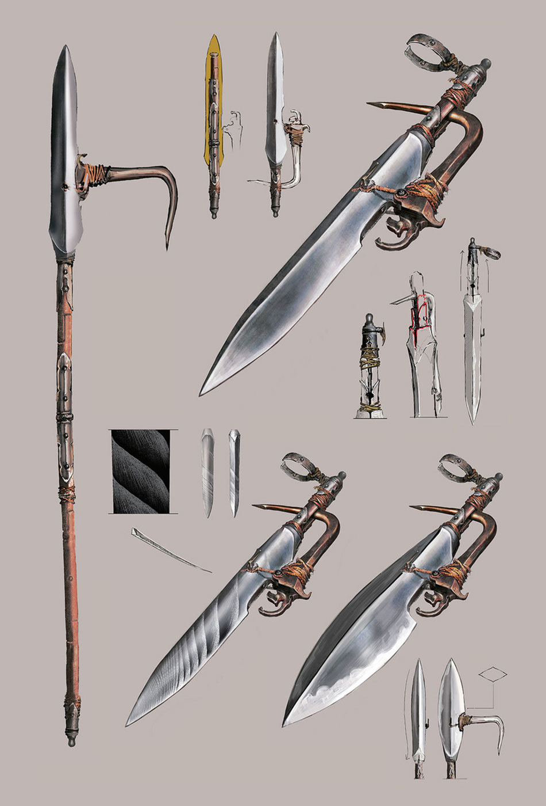
El Hacha Cargada es una herramienta pesada capaz de romper escudos y defensas de madera. Su fuerza de impacto permite castigar a los enemigos que dependen de este tipo de protección [25].
La Lanza Cargada permite realizar ataques de largo alcance y enganchar a determinados adversarios para atraerlos hacia Sekiro. También puede utilizarse para ejecutar ataques penetrantes y aprovechar las debilidades enemigas [26].
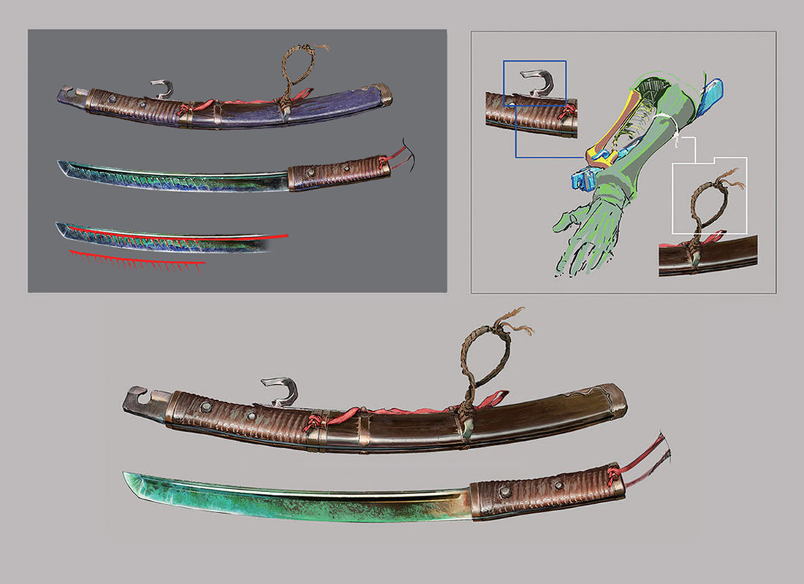
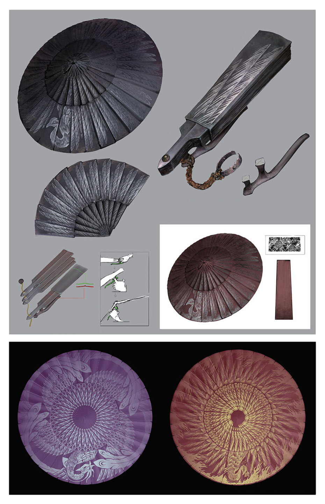
Sabimaru es una pequeña espada envenenada que permite ejecutar ataques rápidos y consecutivos. Su veneno resulta especialmente eficaz contra ciertos enemigos vulnerables a este efecto [27].
El Abanico de hierro, conocido también como Fortaleza de hierro, es una herramienta defensiva que permite bloquear ataques con mayor facilidad. Su uso resulta útil para protegerse ante enemigos que realizan ofensivas difíciles de esquivar [28].
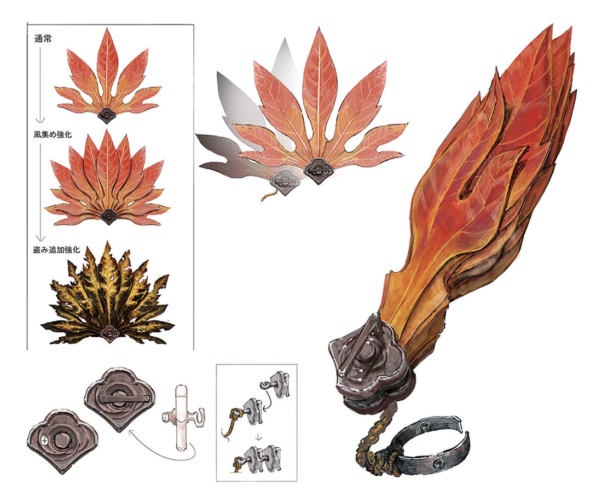
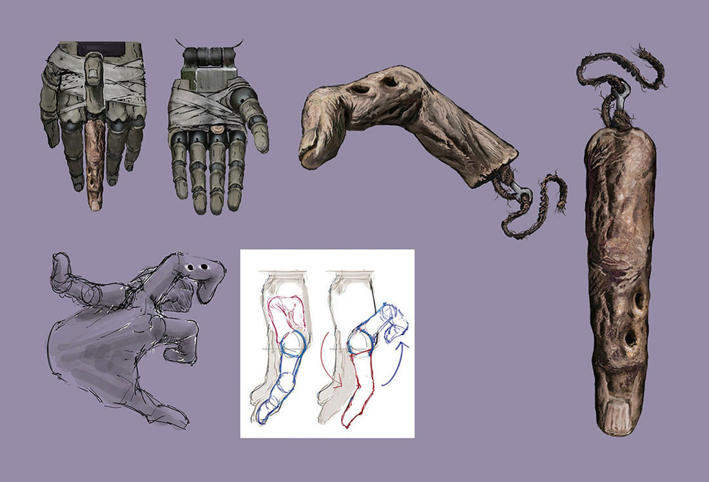
El Secuestro Divino utiliza una ráfaga de viento que puede hacer girar a los enemigos y alterar su orientación. Esta herramienta permite crear oportunidades para atacar o escapar de una situación desfavorable [29].
El Silbato permite llamar la atención de los enemigos y atraerlos hacia una ubicación determinada. Con su mejora Malcontent también puede afectar a ciertos enemigos sobrenaturales, convirtiéndose en una herramienta especialmente útil en enfrentamientos concretos [30].
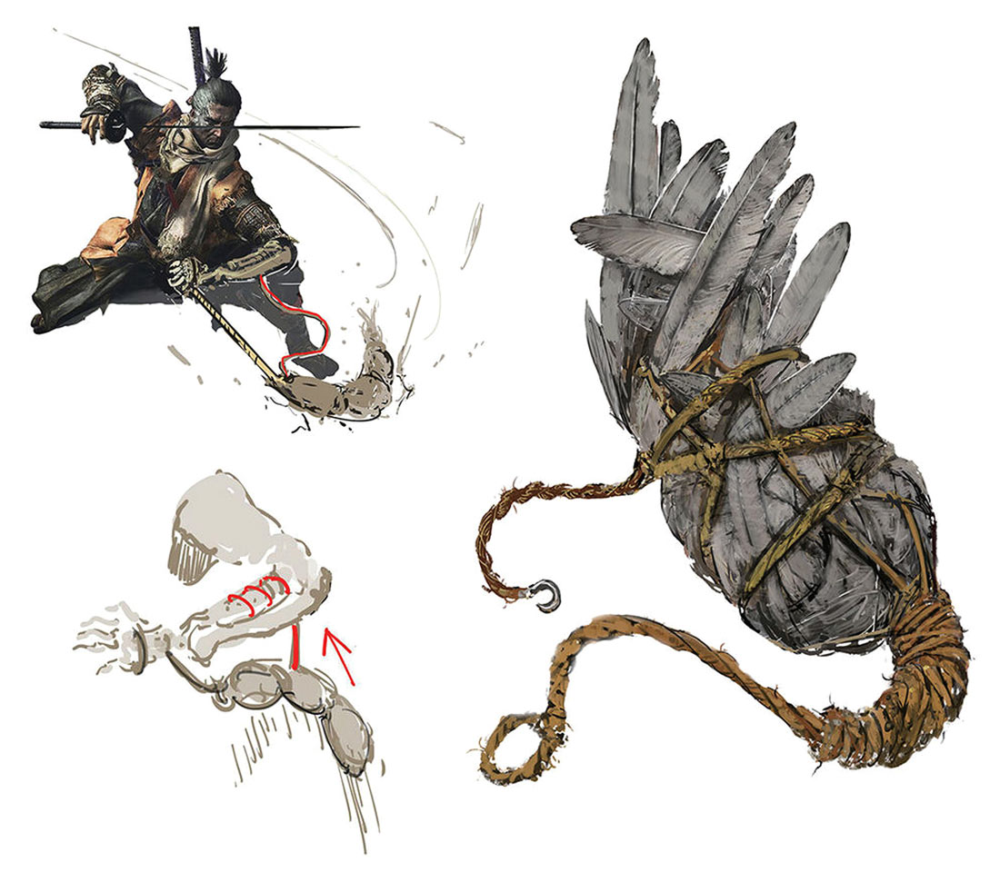
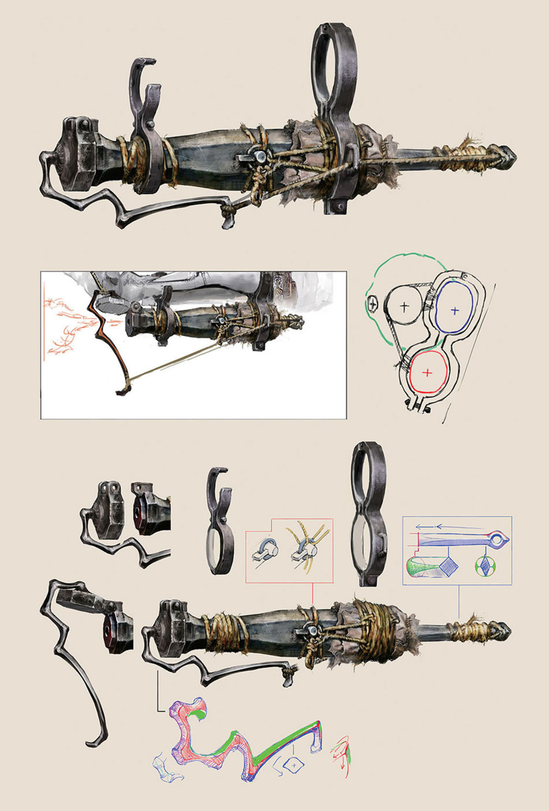
El Cuervo de niebla permite a Sekiro desaparecer momentáneamente y desplazarse para evitar los ataques enemigos. Si se utiliza en el momento adecuado, puede facilitar un contraataque y cambiar el desarrollo de un enfrentamiento [31].
El Conducto Llameante es una herramienta que proyecta fuego y permite atacar a los enemigos mediante llamas. Su uso puede causar quemaduras y resulta especialmente útil contra adversarios vulnerables al fuego [32].